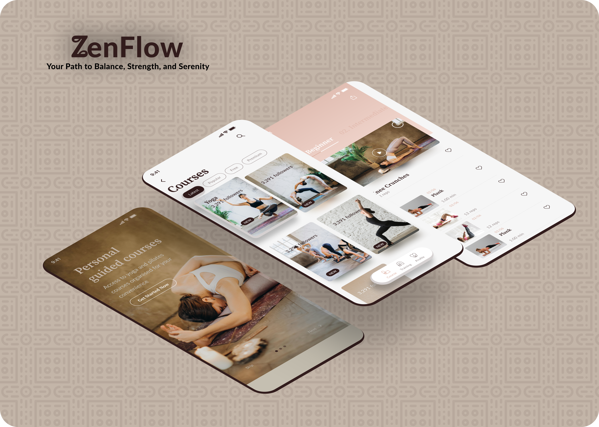

Zenflow

Overview
Zenflow is a wellness app concept designed to solve a common friction point in fitness apps built for women: yoga and strength training are almost always treated as separate products, forcing users to juggle two apps, two habits, and two disconnected routines to get a complete wellness experience.
The Problem
Most fitness apps optimize for one lane — high-intensity gym tracking, or slow-paced yoga and mindfulness — rarely both. For women who want structured strength training and recovery/mindfulness work in one place, that means stitching together a routine across multiple apps with inconsistent design languages, separate logins, and no unified sense of progress.
Designing for Amara
To ground the design decisions, I designed around a practical user persona:
Amara, 27 — Marketing coordinator, new to structured fitness. Wants to build strength without the intimidation of traditional gym apps, and values mindfulness as part of her routine, not an afterthought. Short on time — needs a workout library that's fast to browse and easy to commit to, without decision fatigue.
This persona shaped two concrete decisions: an onboarding flow that reduces early friction (get her into a workout fast, not a lengthy setup process), and a workout library structured around how much time she has, not just workout type.
Design Direction
Instead, Zenflow uses a warm palette of peach, brown, and nude tones — built to feel calming and approachable rather than clinical or intimidating, reinforcing the yoga-meets-strength positioning at a visual level, not just a functional one.
What I Designed
- Onboarding flow — goal-setting, fitness level, and time-availability capture, designed to get a new user into her first session fast
- Workout library — browsable by category and duration, structured around real time constraints rather than a generic exercise catalog
Constraints, Honestly
This was a deliberately scoped concept sprint, not a multi-week engagement — completed in under a week to test moving from concept to high-fidelity screens at speed. It reflects design thinking and execution quality under a tight timeline, not a full end-to-end product research cycle.